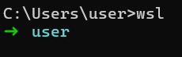
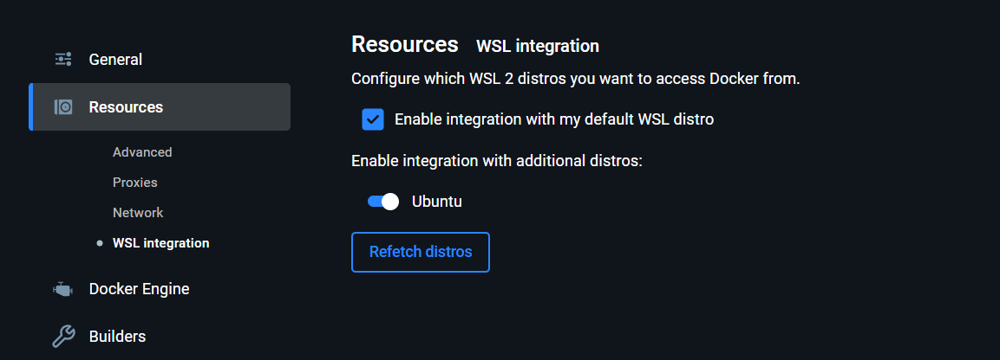

Environment Setup
Complete guide to setting up a development environment using WSL, Docker, and Python tools
We will be working inside WSL for our development environment. This setup provides a robust Linux environment on Windows with all the tools we need for modern development.
First, install WSL:
wsl --installInstall the Ubuntu distro:
wsl --install -d UbuntuSet the default version to WSL2:
wsl --set-default-version 2WSL2
Now you can enter WSL to open a shell:
Docker Desktop
Download and install Docker Desktop
Now, enable WSL2 integration:
Create SSH Key
Create an SSH Key:
ssh-keygen -t rsa -b 4096 -C "email@thoughtminds.io"Add to identity:
ssh-add ~/.ssh/file_nameNow copy contents of the .pub file to GitHub SSH Keys:
Install pyenv
curl -fsSL https://pyenv.run | bashRefer this for setup
Zsh users can do this:
echo 'export PYENV_ROOT="$HOME/.pyenv"' >> ~/.zshrc
echo '[[ -d $PYENV_ROOT/bin ]] && export PATH="$PYENV_ROOT/bin:$PATH"' >> ~/.zshrc
echo 'eval "$(pyenv init - zsh)"' >> ~/.zshrcNow you can install a python version using pyenv:
pyenv install 3.10.5If this throws an error install gcc:
sudo apt install -y software-properties-commonI recommend setting a python version to be the default:
pyenv global 3.10.5Install pipenv
python -m pip install pipenvTo initialize simply run:
pipenv installOnce you have a Pipfile, start installing packages
Eg:
pipenv install tqdm